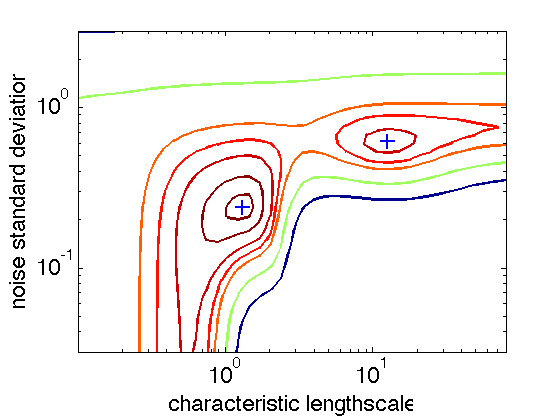
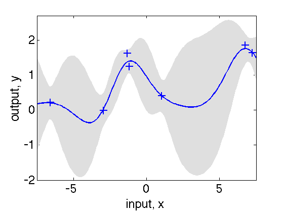
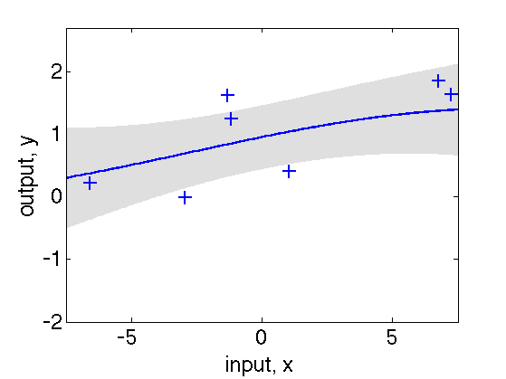

function gprDemoMarglik()
hhh=figure(1)
clf
set(gca,'FontSize',22)
n = 7;
rand('state',28);
randn('state',28);
xs = 15*(rand(n,1)-0.5);
K = inline('exp(-0.5*(repmat(p'',size(q))-repmat(q,size(p''))).^2)');
fs = chol(K(xs,xs)+0.01*eye(n))'*randn(n,1);
n=41;
[X,Y] = meshgrid(linspace(log(0.1),log(80),n), linspace(log(0.03),log(3),n));
for i=1:n*n
try,
Z(i)=gpS00evidence([X(i) 0 Y(i)]',xs,fs,[0 1 0]');
catch
Z(i) = 100;
end
end
Z(Z>100)=100;
[cs,hh]=contour(exp(X),exp(Y),-reshape(Z,n,n),-[8.3 8.5 8.9 9.3 9.8 11.5 15])
set(hh,'LineWidth',2)
set(gca,'XScale','log','YScale','log')
xlabel('characteristic lengthscale')
ylabel('noise standard deviation')
[a1 b1 c1]=minimize([log(1) 0 log(0.2)]',@gpS00evidence,-100,xs,fs,[1 0 1]');
[a2 b2 c2]=minimize([log(10) 0 log(0.8)]',@gpS00evidence,-100,xs,fs,[1 0 1]');
hold on
plot(exp(a1(1)),exp(a1(3)),'+','MarkerSize',14,'LineWidth',2)
plot(exp(a2(1)),exp(a2(3)),'+','MarkerSize',14,'LineWidth',2)
set(hhh,'PaperPosition', [0.25 2.5 8 6])
hhh2=figure(2);
clf
set(gca,'FontSize',24)
x = linspace(-7.5,7.5,201)';
[mu S] = gpS00evidence(a1,xs,fs,1,x);
z = 7.47;
xxs = max(min([x; flipdim(x,1)],z),-z);
ys = max(min([mu+2*sqrt(S);flipdim(mu-2*sqrt(S),1)],z/2),-z/2);
fill(xxs,ys,[7 7 7]/8, 'EdgeColor', [7 7 7]/8)
hold on
plot(xs,fs,'+','MarkerSize',14,'LineWidth',2)
plot(x,mu,'-','LineWidth',2)
axis([-7.5 7.5 -2 2.7])
xlabel('input, x')
ylabel('output, y')
set(hhh2,'PaperPosition', [0.25 2.5 8 6])
hhh3=figure(3);
clf
set(gca,'FontSize',24)
x = linspace(-7.5,7.5,201)';
[mu S] = gpS00evidence(a2,xs,fs,1,x);
z = 7.47;
xxs = max(min([x; flipdim(x,1)],z),-z);
ys = max(min([mu+2*sqrt(S);flipdim(mu-2*sqrt(S),1)],z/2),-z/2);
fill(xxs,ys,[7 7 7]/8, 'EdgeColor', [7 7 7]/8)
hold on
plot(x,mu,'-','LineWidth',2)
plot(xs,fs,'+','MarkerSize',14,'LineWidth',2)
axis([-7.5 7.5 -2 2.7])
xlabel('input, x')
ylabel('output, y')
set(hhh3,'PaperPosition', [0.25 2.5 8 6])
end
function [out1, out2, out3] = gpS00evidence(X, input, target, mask, test);
[n, D] = size(input);
input = input ./ repmat(exp(X(1:D))',n,1);
Q = zeros(n,n);
for d = 1:D
Q = Q + (repmat(input(:,d),1,n)-repmat(input(:,d)',n,1)).^2;
end
Q = exp(2*X(D+1))*exp(-0.5*Q);
if nargin == 4
W = inv(Q+exp(2*X(D+2))*eye(n));
invQt = W*target;
logdetQ = 2*sum(log(diag(chol(Q+exp(2*X(D+2))*eye(n)))));
out1 = 0.5*logdetQ + 0.5*target'*invQt + 0.5*n*log(2*pi);
out2 = zeros(D+2,1);
W = W-invQt*invQt';
Q = W.*Q;
for d = 1:D
out2(d) = ...
sum(sum(Q.*(repmat(input(:,d),1,n)-repmat(input(:,d)',n,1)).^2))/2;
end
out2(D+1) = sum(sum(Q));
out2(D+2) = trace(W)*exp(2*X(D+2));
out2 = out2 .* mask;
out3 = [-0.5*logdetQ -0.5*target'*invQt];
else
[nn, D] = size(test);
test = test ./ repmat(exp(X(1:D))',nn,1);
a = zeros(n, nn);
for d = 1:D
a = a + (repmat(input(:,d),1,nn)-repmat(test(:,d)',n,1)).^2;
end
a = exp(2*X(D+1))*exp(-0.5*a);
if nargout == 1
out1 = a'*((Q+exp(2*X(D+2))*eye(n))\target);
else
invQ = inv(Q+exp(2*X(D+2))*eye(n));
out1 = a'*(invQ*target);
out2 = exp(2*X(D+1)) - sum(a.*(invQ*a),1)';
end
end
end
hhh =
1
cs =
Columns 1 through 4
-15.0000 0.1908 0.1651 0.1397
5.0000 3.0000 2.9988 2.9974
Columns 5 through 8
0.1182 0.1000 -15.0000 1.1962
2.9960 2.9945 50.0000 0.0300
Columns 9 through 12
1.2179 1.2265 1.2412 1.2725
0.0337 0.0349 0.0378 0.0424
Columns 13 through 16
1.3205 1.3942 1.4496 1.5226
0.0475 0.0533 0.0569 0.0599
Columns 17 through 20
1.7132 1.7651 2.0248 2.1144
0.0662 0.0672 0.0728 0.0754
Columns 21 through 24
2.3624 2.3931 2.4772 2.5672
0.0846 0.0861 0.0949 0.1064
Columns 25 through 28
2.6543 2.7435 2.8284 2.8361
0.1194 0.1340 0.1485 0.1504
Columns 29 through 32
2.9141 3.0227 3.1789 3.3429
0.1687 0.1893 0.2124 0.2322
Columns 33 through 36
3.4378 3.9509 4.0430 4.6696
0.2383 0.2660 0.2674 0.2782
Columns 37 through 40
5.5189 6.5228 7.7092 9.1114
0.2801 0.2779 0.2740 0.2699
Columns 41 through 44
10.4062 10.7687 12.7274 15.0424
0.2674 0.2669 0.2659 0.2663
Columns 45 through 48
16.4578 17.7785 21.0122 24.8341
0.2674 0.2689 0.2744 0.2820
Columns 49 through 52
29.3512 33.9469 34.6900 40.9997
0.2913 0.3000 0.3019 0.3155
Columns 53 through 56
48.4572 57.2711 57.7739 67.6882
0.3271 0.3362 0.3366 0.3459
Columns 57 through 60
80.0000 -11.5000 1.0121 1.0246
0.3531 53.0000 0.0300 0.0337
Columns 61 through 64
1.0377 1.0397 1.0533 1.0732
0.0370 0.0378 0.0424 0.0475
Columns 65 through 68
1.1023 1.1457 1.2112 1.2265
0.0533 0.0599 0.0672 0.0687
Columns 69 through 72
1.3158 1.4496 1.5057 1.7132
0.0754 0.0828 0.0846 0.0912
Columns 73 through 76
1.8425 2.0248 2.0972 2.2387
0.0949 0.1014 0.1064 0.1194
Columns 77 through 80
2.3637 2.3931 2.4350 2.4933
0.1340 0.1385 0.1504 0.1687
Columns 81 through 84
2.5584 2.6359 2.7335 2.8284
0.1893 0.2124 0.2383 0.2609
Columns 85 through 88
2.8611 3.0496 3.3429 3.3619
0.2674 0.3000 0.3357 0.3366
Columns 89 through 92
3.9509 4.6696 5.5189 6.5228
0.3646 0.3693 0.3654 0.3577
Columns 93 through 96
7.7092 9.1114 10.2407 10.7687
0.3487 0.3405 0.3366 0.3354
Columns 97 through 100
12.7274 15.0424 15.8082 17.7785
0.3340 0.3354 0.3366 0.3413
Columns 101 through 104
21.0122 24.8341 29.2153 29.3512
0.3516 0.3644 0.3777 0.3783
Columns 105 through 108
34.6900 40.9997 47.9116 48.4572
0.3972 0.4127 0.4238 0.4250
Columns 109 through 112
57.2711 67.6882 80.0000 -11.5000
0.4380 0.4473 0.4538 44.0000
Columns 113 through 116
0.1000 0.1182 0.1397 0.1416
1.1417 1.1694 1.1927 1.1943
Columns 117 through 120
0.1651 0.1951 0.2306 0.2726
1.2118 1.2322 1.2560 1.2823
Columns 121 through 124
0.3221 0.3807 0.4099 0.4500
1.3083 1.3317 1.3401 1.3512
Columns 125 through 128
0.5318 0.6286 0.7429 0.8780
1.3671 1.3796 1.3893 1.3972
Columns 129 through 132
1.0377 1.2265 1.4496 1.7132
1.4044 1.4113 1.4179 1.4241
Columns 133 through 136
2.0248 2.3931 2.8284 3.3429
1.4299 1.4364 1.4453 1.4591
Columns 137 through 140
3.9509 4.6696 4.7489 5.5189
1.4784 1.5013 1.5036 1.5255
Columns 141 through 144
6.5228 7.7092 9.1114 10.7687
1.5478 1.5664 1.5811 1.5921
Columns 145 through 148
12.7274 15.0424 17.7785 21.0122
1.6002 1.6061 1.6102 1.6131
Columns 149 through 152
24.8341 29.3512 34.6900 40.9997
1.6152 1.6166 1.6176 1.6183
Columns 153 through 156
48.4572 57.2711 67.6882 80.0000
1.6188 1.6192 1.6195 1.6196
Columns 157 through 160
-9.8000 0.2618 0.2619 0.2619
66.0000 0.0300 0.0337 0.0378
Columns 161 through 164
0.2620 0.2621 0.2622 0.2624
0.0424 0.0475 0.0533 0.0599
Columns 165 through 168
0.2626 0.2629 0.2632 0.2636
0.0672 0.0754 0.0846 0.0949
Columns 169 through 172
0.2641 0.2648 0.2657 0.2668
0.1064 0.1194 0.1340 0.1504
Columns 173 through 176
0.2682 0.2700 0.2724 0.2726
0.1687 0.1893 0.2124 0.2140
Columns 177 through 180
0.2759 0.2805 0.2864 0.2942
0.2383 0.2674 0.3000 0.3366
Columns 181 through 184
0.3044 0.3180 0.3221 0.3399
0.3777 0.4238 0.4360 0.4755
Columns 185 through 188
0.3711 0.3807 0.4252 0.4500
0.5335 0.5492 0.5986 0.6229
Columns 189 through 192
0.5272 0.5318 0.6286 0.7429
0.6716 0.6743 0.7113 0.7381
Columns 193 through 196
0.8472 0.8780 1.0377 1.2265
0.7536 0.7581 0.7740 0.7864
Columns 197 through 200
1.4496 1.7132 2.0248 2.3931
0.7944 0.7962 0.7901 0.7765
Columns 201 through 204
2.8284 3.3429 3.9509 4.3072
0.7634 0.7702 0.8120 0.8455
Columns 205 through 208
4.6696 5.5189 5.9941 6.5228
0.8711 0.9256 0.9487 0.9707
Columns 209 through 212
7.7092 9.1114 10.7687 12.7274
1.0042 1.0281 1.0438 1.0530
Columns 213 through 216
15.0424 17.7785 21.0122 24.8341
1.0575 1.0587 1.0579 1.0559
Columns 217 through 220
29.3512 34.6900 40.9997 48.4572
1.0533 1.0508 1.0484 1.0463
Columns 221 through 224
57.2711 67.6882 80.0000 -9.8000
1.0447 1.0434 1.0424 58.0000
Columns 225 through 228
0.8468 0.8551 0.8659 0.8780
0.0300 0.0337 0.0378 0.0416
Columns 229 through 232
0.8793 0.8899 0.9050 0.9268
0.0424 0.0475 0.0533 0.0599
Columns 233 through 236
0.9590 1.0074 1.0377 1.0739
0.0672 0.0754 0.0796 0.0846
Columns 237 through 240
1.1760 1.2265 1.3724 1.4496
0.0949 0.0991 0.1064 0.1102
Columns 241 through 244
1.7132 1.7231 1.9528 2.0248
0.1190 0.1194 0.1340 0.1402
Columns 245 through 248
2.0814 2.1582 2.2273 2.2924
0.1504 0.1687 0.1893 0.2124
Columns 249 through 252
2.3574 2.3931 2.4151 2.4715
0.2383 0.2544 0.2674 0.3000
Columns 253 through 256
2.5465 2.6477 2.7847 2.8284
0.3366 0.3777 0.4238 0.4400
Columns 257 through 260
3.0374 3.3429 3.9509 4.6696
0.4755 0.5225 0.5301 0.5124
Columns 261 through 264
5.5189 5.6905 6.5228 7.7092
0.4819 0.4755 0.4583 0.4369
Columns 265 through 268
8.7129 9.1114 10.7687 12.7274
0.4238 0.4206 0.4135 0.4113
Columns 269 through 272
15.0424 17.7785 17.8999 21.0122
0.4148 0.4233 0.4238 0.4430
Columns 273 through 276
24.8341 27.2484 29.3512 34.6900
0.4645 0.4755 0.4897 0.5148
Columns 277 through 280
40.9997 41.4372 48.4572 57.2711
0.5327 0.5335 0.5537 0.5682
Columns 281 through 284
67.6882 80.0000 -9.3000 0.3456
0.5779 0.5846 71.0000 0.0300
Columns 285 through 288
0.3456 0.3457 0.3458 0.3459
0.0337 0.0378 0.0424 0.0475
Columns 289 through 292
0.3460 0.3462 0.3464 0.3468
0.0533 0.0599 0.0672 0.0754
Columns 293 through 296
0.3472 0.3478 0.3485 0.3496
0.0846 0.0949 0.1064 0.1194
Columns 297 through 300
0.3510 0.3529 0.3554 0.3588
0.1340 0.1504 0.1687 0.1893
Columns 301 through 304
0.3634 0.3695 0.3776 0.3807
0.2124 0.2383 0.2674 0.2771
Columns 305 through 308
0.3908 0.4094 0.4339 0.4500
0.3000 0.3366 0.3777 0.4013
Columns 309 through 312
0.4722 0.5311 0.5318 0.6286
0.4238 0.4755 0.4760 0.5267
Columns 313 through 316
0.6490 0.7429 0.8780 0.9594
0.5335 0.5626 0.5886 0.5986
Columns 317 through 320
1.0377 1.2265 1.4496 1.7132
0.6080 0.6220 0.6286 0.6231
Columns 321 through 324
1.9973 2.0248 2.2893 2.3703
0.5986 0.5956 0.5335 0.4755
Columns 325 through 328
2.3729 2.3460 2.3087 2.2685
0.4238 0.3777 0.3366 0.3000
Columns 329 through 332
2.2275 2.1851 2.1400 2.0899
0.2674 0.2383 0.2124 0.1893
Columns 333 through 336
2.0325 2.0248 1.8891 1.7132
0.1687 0.1668 0.1504 0.1347
Columns 337 through 340
1.6996 1.4496 1.3401 1.2265
0.1340 0.1246 0.1194 0.1143
Columns 341 through 344
1.1255 1.0377 1.0132 0.9395
0.1064 0.0978 0.0949 0.0846
Columns 345 through 348
0.8948 0.8780 0.8587 0.8268
0.0754 0.0708 0.0672 0.0599
Columns 349 through 352
0.8050 0.7896 0.7786 0.7705
0.0533 0.0475 0.0424 0.0378
Columns 353 through 356
0.7645 0.7600 -9.3000 67.6882
0.0337 0.0300 43.0000 0.7587
Columns 357 through 360
70.7693 67.6882 57.2711 49.0793
0.7536 0.7496 0.7233 0.6716
Columns 361 through 364
48.4572 40.9997 34.6900 33.8722
0.6705 0.6478 0.6076 0.5986
Columns 365 through 368
29.3512 25.1174 24.8341 21.0122
0.5739 0.5335 0.5318 0.5036
Columns 369 through 372
17.9347 17.7785 15.0424 12.7274
0.4755 0.4746 0.4622 0.4569
Columns 373 through 376
10.7687 9.1114 8.7154 7.7092
0.4598 0.4706 0.4755 0.4982
Columns 377 through 380
6.5588 6.5228 5.7786 5.6756
0.5335 0.5360 0.5986 0.6716
Columns 381 through 384
6.2763 6.5228 7.7092 8.3701
0.7536 0.7712 0.8275 0.8455
Columns 385 through 388
9.1114 10.7687 12.7274 15.0424
0.8617 0.8807 0.8900 0.8919
Columns 389 through 392
17.7785 21.0122 24.8341 29.3512
0.8883 0.8807 0.8705 0.8589
Columns 393 through 396
34.6900 35.5962 40.9997 48.4572
0.8471 0.8455 0.8278 0.8055
Columns 397 through 400
57.2711 67.6882 -8.9000 0.4999
0.7821 0.7587 67.0000 0.0300
Columns 401 through 404
0.4976 0.4950 0.4921 0.4888
0.0337 0.0378 0.0424 0.0475
Columns 405 through 408
0.4852 0.4815 0.4776 0.4739
0.0533 0.0599 0.0672 0.0754
Columns 409 through 412
0.4703 0.4672 0.4646 0.4629
0.0846 0.0949 0.1064 0.1194
Columns 413 through 416
0.4624 0.4632 0.4659 0.4709
0.1340 0.1504 0.1687 0.1893
Columns 417 through 420
0.4789 0.4907 0.5074 0.5304
0.2124 0.2383 0.2674 0.3000
Columns 421 through 424
0.5318 0.5729 0.6286 0.6315
0.3017 0.3366 0.3763 0.3777
Columns 425 through 428
0.7418 0.7429 0.8780 1.0027
0.4238 0.4242 0.4570 0.4755
Columns 429 through 432
1.0377 1.2265 1.4496 1.7132
0.4804 0.4960 0.5009 0.4857
Columns 433 through 436
1.7720 1.9821 2.0248 2.0584
0.4755 0.4238 0.4065 0.3777
Columns 437 through 440
2.0797 2.0803 2.0683 2.0473
0.3366 0.3000 0.2674 0.2383
Columns 441 through 444
2.0248 2.0102 1.9264 1.8166
0.2190 0.2124 0.1893 0.1687
Columns 445 through 448
1.7132 1.6352 1.4496 1.2805
0.1552 0.1504 0.1418 0.1340
Columns 449 through 452
1.2265 1.0533 1.0377 0.9278
0.1318 0.1194 0.1181 0.1064
Columns 453 through 456
0.8780 0.8486 0.7862 0.7510
0.0986 0.0949 0.0846 0.0754
Columns 457 through 460
0.7429 0.7090 0.6775 0.6580
0.0726 0.0672 0.0599 0.0533
Columns 461 through 464
0.6453 0.6365 0.6303 0.6286
0.0475 0.0424 0.0378 0.0363
Columns 465 through 468
0.6138 0.5984 -8.9000 17.7785
0.0337 0.0300 17.0000 0.6974
Columns 469 through 472
19.4298 18.9914 17.7785 15.0424
0.6716 0.5986 0.5803 0.5356
Columns 473 through 476
14.8287 12.7274 10.7687 10.5205
0.5335 0.5258 0.5307 0.5335
Columns 477 through 480
9.1114 8.7053 8.9818 9.1114
0.5766 0.5986 0.6716 0.6779
Columns 481 through 484
10.7687 12.7274 15.0424 17.7785
0.7165 0.7302 0.7241 0.6974
Columns 485 through 488
-8.5000 0.7429 0.7578 0.8345
29.0000 0.2589 0.2674 0.3000
Columns 489 through 492
0.8780 0.9776 1.0377 1.2265
0.3151 0.3366 0.3479 0.3674
Columns 493 through 496
1.4496 1.7051 1.7132 1.7730
0.3706 0.3366 0.3350 0.3000
Columns 497 through 500
1.7955 1.7866 1.7495 1.7132
0.2674 0.2383 0.2124 0.1999
Columns 501 through 504
1.6403 1.4496 1.3803 1.2265
0.1893 0.1720 0.1687 0.1632
Columns 505 through 508
1.0377 0.9562 0.8780 0.7429
0.1544 0.1504 0.1460 0.1501
Columns 509 through 512
0.7421 0.7076 0.6961 0.7004
0.1504 0.1687 0.1893 0.2124
Columns 513 through 516
0.7189 0.7429 -8.3000 1.0377
0.2383 0.2589 13.0000 0.2496
Columns 517 through 520
1.1085 1.2265 1.4496 1.5093
0.2674 0.2852 0.2854 0.2674
Columns 521 through 524
1.5270 1.4632 1.4496 1.2265
0.2383 0.2124 0.2102 0.2009
Columns 525 through 528
1.0377 1.0146 1.0120 1.0377
0.2075 0.2124 0.2383 0.2496
hh =
348.0679
Function evaluation 3; Value 8.261745e+00Function evaluation 8; Value 8.246450e+00Function evaluation 10; Value 8.244217e+00Function evaluation 12; Value 8.244211e+00Function evaluation 14; Value 8.244208e+00Function evaluation 16; Value 8.244208e+00Function evaluation 19; Value 8.244208e+00Function evaluation 20; Value 8.244208e+00
Function evaluation 3; Value 8.793120e+00Function evaluation 5; Value 8.762571e+00Function evaluation 8; Value 8.762494e+00Function evaluation 9; Value 8.762417e+00Function evaluation 12; Value 8.762417e+00Function evaluation 14; Value 8.762417e+00Function evaluation 17; Value 8.762417e+00
  